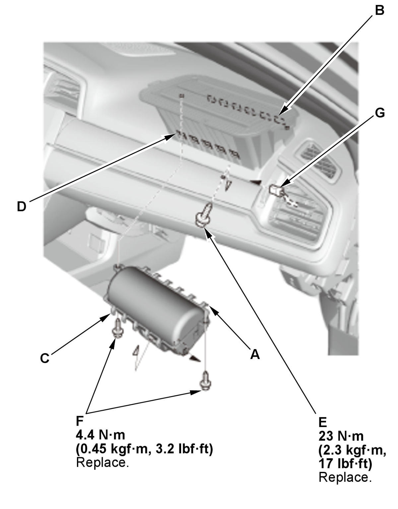
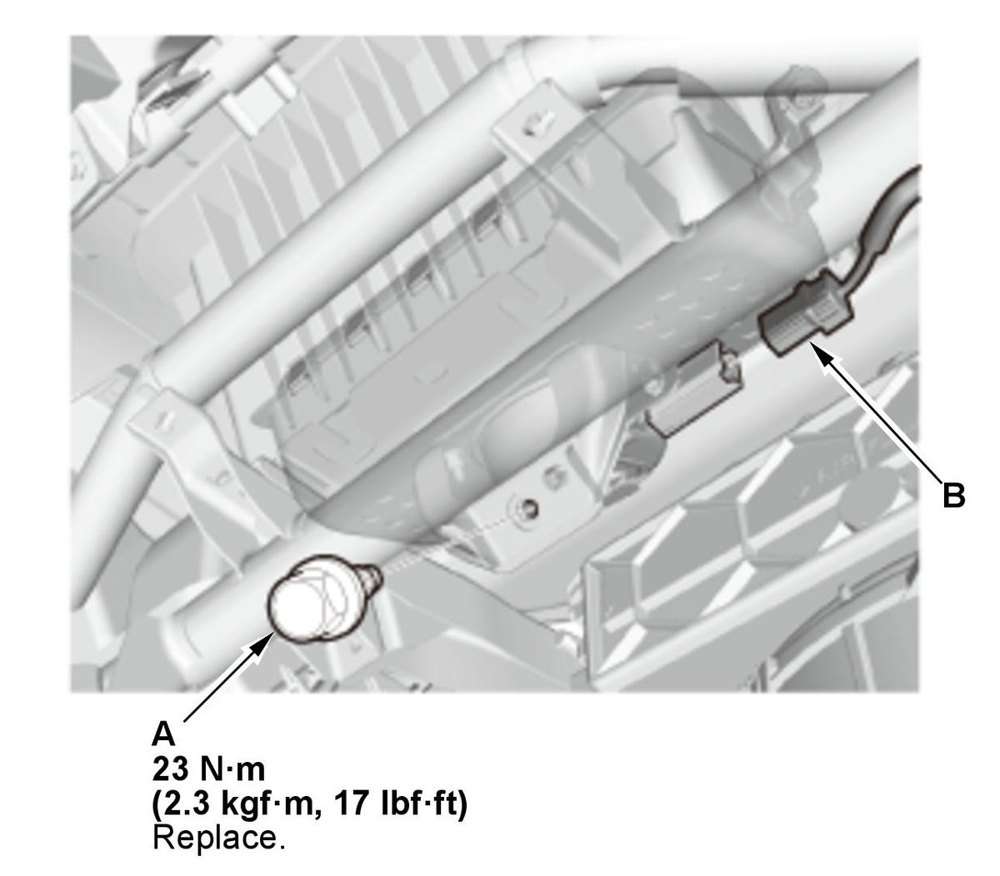

Front Passenger's Airbag Removal and Installation: Installation
SRS components are located in this area. Review the SRS component locations and the precautions and procedures before doing repairs or service.
Installation Before Front Passenger's Airbag Deployment
- Front Passenger's Airbag - InstallFig 1: Front Passenger's Airbag Components With Torque Specifications (Installation Before Deployment)

Courtesy of HONDA, U.S.A., INC.1. Insert the hooks (A) into the front passenger's airbag housing holes (B), then insert the other hooks (C) into the housing holes (D).
NOTE:- Make sure there are no objects between the airbag and the dashboard.
- Make sure the airbag is fully seated, and make sure the dashboard is not deformed or damaged after the airbag is in place.
- Make sure the hooks are set properly.
2. Tighten the new mounting bolts (E), (F).
3. Connect the connector (G).
4. With knee bolster: Install the bracket (A) with the special bolt (B) and the mounting bolts (C).
NOTE: When installing the special bolt, refer to the procedures of Dashboard/Steering Hanger Beam Removal and Installation .
- SRS Operation - Confirm
1. Do the 12 volt battery terminal reconnection procedure, turn the vehicle to the ON mode, and check that the SRS indicator comes on for about 6 seconds and then goes off. - Cowl Cover - Install
- Blower Unit - Install
Installation After Front Passenger's Airbag Deployment
- Front Passenger's Airbag - Install
1. Insert the hooks (A) into the front passenger's airbag housing holes (B), then insert the other hooks (C) into the housing holes (D). 2. Tighten the new mounting bolts (E).
NOTE:
- Make sure there are no objects between the airbag and the dashboard.
- Make sure the airbag is fully seated, and make sure the dashboard is not deformed or damaged after the airbag is in place.
- Make sure the hooks are set properly.
3. Install the front passenger's airbag/dashboard assembly (A) . Fig 3: Front Passenger's Airbag Components With Torque Specifications (Installation After Deployment)
Courtesy of HONDA, U.S.A., INC.4. Install the new mounting bolt (A). 5. Connect the connector (B).
- SRS Operation - Confirm
1. Do the 12 volt battery terminal reconnection procedure, turn the vehicle to the ON mode, and check that the SRS indicator comes on for about 6 seconds and then goes off. - Glove Box - Install